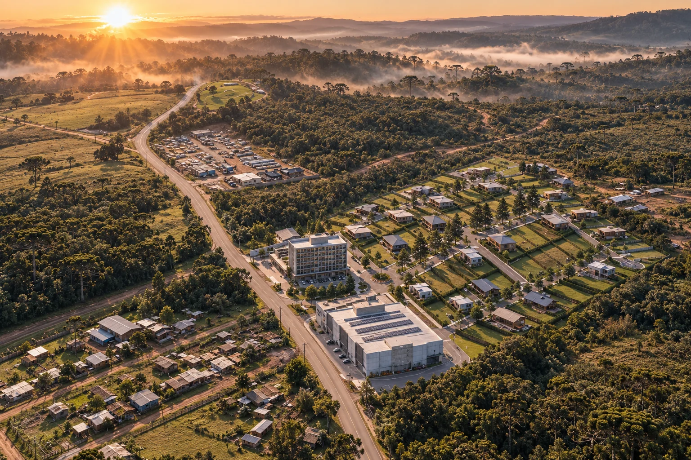
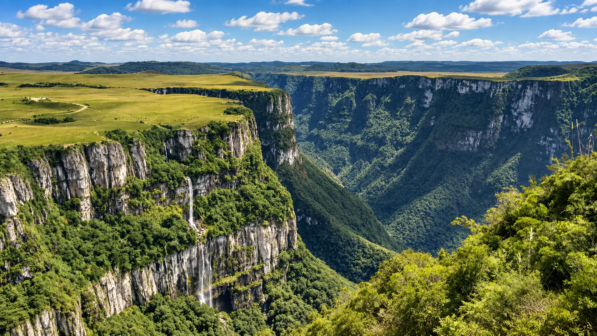

Destino consolidado
Cambará do Sul é reconhecida pelas trilhas, cânions e paisagens dos Aparados da Serra.

INVISTA NO DESTINO DOS CÂNIONS
Aparados Bairro Planejado. Lotes residenciais e comerciais em Cambará do Sul, a aproximadamente 500 metros do centro, em uma cidade reconhecida por suas trilhas, cânions e forte vocação turística.
Apenas 76 lotesCambará do Sul reúne natureza, experiências e um fluxo turístico que movimenta hospedagem, gastronomia, serviços e imóveis. O Aparados nasce dentro dessa vocação.
Um ativo imobiliário em uma cidade turística
com oferta limitada de terrenos bem localizados.
| Oportunidade | Dimensão | Oferta | Potencial |
|---|---|---|---|
| Residencial | 350 a 400 m² | 65 lotes | Moradia, segunda residência ou locação |
| Comercial | 700 a 1.000 m² | 11 lotes | Turismo, gastronomia, serviços e hospedagem |
| Localização | ERS-020 | ~500 m | Próximo ao centro e conectado ao principal eixo de acesso |
| Implantação | Obras iniciadas | 2029 | Projeto em desenvolvimento |
POR QUE CAMBARÁ DO SUL?
Cambará do Sul é reconhecida pelas trilhas, cânions e paisagens dos Aparados da Serra.
O turismo movimenta hospedagem, gastronomia, experiências e serviços durante todo o ano.
Um bairro planejado com apenas 76 lotes cria escassez dentro de uma localização estratégica.

TURISMO QUE GERA DEMANDA
Trilhas, cânions, frio, gastronomia e natureza fazem de Cambará do Sul um destino com identidade própria. Além de possuir um Geoparque Mundial da UNESCO Caminhos dos Cânions do Sul, a cidade agora conta com um investimento importante para atender a crescente demanda por hospedagem, uma segunda residência, gastronomia, comércio e experiências, isso tudo transforma localização em um ativo estratégico.
Quem investe em destino turístico não compra apenas terra. Compra posição.
A RESIDÊNCIA
Um projeto desenhado para atender diferentes estratégias patrimoniais: construir, morar, explorar comercialmente, criar um refúgio de serra ou posicionar patrimônio em uma região turística.
UM PROJETO EM MOVIMENTO
A preparação dos lotes já começou, com conclusão estimada para o início de 2029. O projeto chega em uma fase em que infraestrutura e desenvolvimento urbano ainda estão sendo consolidados.
LOCALIZAÇÃO QUE FAZ SENTIDO PARA INVESTIR
ERS-020, altura do nº 187 — Cambará do Sul/RS
DÚVIDAS DE QUEM PENSA COMO INVESTIDOR
A cidade possui forte identidade turística, associada aos cânions, trilhas, natureza, frio e experiências na Serra Gaúcha.
Sim. São 11 lotes comerciais, com áreas entre aproximadamente 700 m² e 1.000 m².
O projeto conta com 65 lotes residenciais entre aproximadamente 350 m² e 400 m², adequados a diferentes projetos residenciais, sujeitos às regras urbanísticas e do empreendimento.
Às margens da ERS-020, na altura do número 187, a aproximadamente 500 metros do Centro de Cambará do Sul.
Sim. A preparação dos lotes já foi iniciada.
A conclusão está estimada para o início de 2029.
Fale com nosso setor de vendas
Saiba antes que o mercado